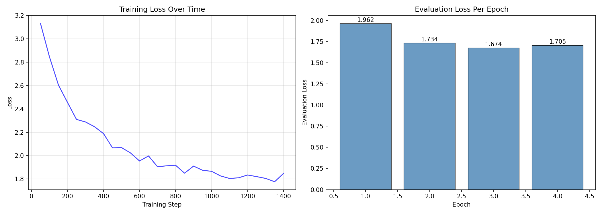

Week 12: Fine Tuning BERT for Early Modern English
Week 12 goals:
We are now going to build on the understanding of BERT we built last week and learn how to fine-tune the model. We will work with the Geneva Bible (you can find a .xlsx file on Canvas under “Weeks 11-13”, titled “genevaBible.xlsx” alongside the corpus that we will work with in Week 13) and the tutorial will walk you through the full training loop using HuggingFace’s Trainer. We will then compare before/after predictions side by side. At the end, we save fine-tuned model for Week 13!
A warning: this tutorial is more computationally intensive! The fine-tuning step (step 5) will take 10-30 minutes on CPU, or 2-5 minutes on GPU. Plan accordingly.
Let’s get started!
Last week, we started to play around with BERT and become familiar with contextual embeddings. When we tested BERT’s performance with Early Modern texts, we saw that it had some clear limitations: presented with Early Modern text, its masked-word predictions were sometimes off, and its confidence was lower than for modern English. This is because BERT was pre-trained on Wikipedia and contemporary books: it knows modern English fluently, but Early Modern English is a foreign dialect.
This week, we see how to improve BERT’s performance with Early Modern English. The approach we are taking today will also work with other specialized forms of langauge We will fine-tune BERT on the Geneva Bible (1560). This is an approach that I use in my own work because the Geneva Bible has a large vocabulary and it was deeply influential (Shakespeare, Bunyan, and Milton drew from its language and it would have been familiar to audiences both in the Old and New World in the 16th and 17th century), especially for religious language. Note: this isn’t a perfect training set (ideally, we would want a more varied and larger training set), but it will demonstrate the process and improve the results.
The goal is simple: we want to add to BERT’s training and teach it the spelling, vocabulary, and syntax of the period. This process is called domain-adaptive pretraining.
The process that we will follow today:
- Load and prepare a historical corpus for language model fine-tuning
- Evaluate BERT’s baseline performance on Early Modern English
- Fine-tune BERT using masked language modeling
- Measure whether the fine-tuned model actually improved (!)
- Save a domain-adapted model for use on other historical texts (next week)
Conceptual Background: Why Fine-Tune?
The problem for using BERT on Early Modern texts is that BERT’s pre-training corpus was modern. There is a BERT model (MacBERTh) that was trained on “historical” English, but its training text covers a much longer period than I work on (1450-1950). While MacBERTh functions much better than plain old BERT on my corpus, it’s not perfect either. So we are going to see what we can do to improve BERT itself. (In practice, in my work, I use MacBERTh and fine tune it with genre specific training sets, but let’s play with BERT-base for our class since this is a model that most of you might be interested in.)
When BERT encounters Early Modern spellings, such as “heauen” (heaven), “darkenesse” (darkness), “vnto” (unto), or “saide” (said), these words either:
- Get split into unusual subword pieces (e.g., “heauen” →
["he", "##au", "##en"]) - Get misinterpreted because the surrounding syntax is unfamiliar
The embeddings BERT produces for Early Modern sentences are therefore noisier and less semantically coherent than those it produces for modern text.
To attempt to solve this problem and improve BERT’s performance (note: I am saying improve not fully fix). We continue BERT’s MLM training on a substantial body of Early Modern English. The Geneva Bible is a good starting point for this because:
- It is a reasonably sized corpus with a varied vocabulary: 31,102 verses with a vocabulary of 14,653 unique words, and a total of 779,862 words (note: this file does not contain the marginal notes). Because of the number of proper names and variant Early Modern spellings (such “wiers” = wires meaning “threads”), 5,150 words in this file (a third of the vocabulary) are hapax legomena. As a fine-tuning corpus, this is rather small, but it will serve our purpose.
- There is a clean, well-structured version freely available (no OCR errors)
- It captures the orthography and syntax of the 1560s
- Its vocabulary overlaps heavily with the mercantile documents we will analyze next week (the Bible’s metaphorical language on commerce influenced how Early Modern people wrote about trade and sea-travel)
After fine-tuning, BERT will produce better embeddings for our Early Modern English text–let’s see just how much better we can do (a priori, we are not expecting a large improvement, but we want to see how far we can take this exercize). The model learns the language, not just the content. During fine-tuning, we randomly mask 15% of tokens in each sentence and ask BERT to predict them. When BERT predicts “heauen” where “heauen” was masked, it updates its internal weights to be better at representing that word and its context.
Step 0: Step up
Let’s start by making sure that all the required packages are installed. This week, I will also include more links and resources for the packages (last week, I focused my links on more conceptual points about BERT models).
First, you will need to pip install datasets openpyxl. datasets is the standard datasets library from Hugging Face and it will handle loading, manipulating, and preparing our data for BERT. In our pipeline, you will first see it when we turn the Bible text from a Python list of text strings into a structured dataset object.
openpyxlis the library that we use for reading and writing Excel files (which is the format of the Geneva Bible file I uploaded on Canvas).
Create a new file, week-12-step0.py and run it:
# Check that all required packages are installed.
import torch
import pandas as pd
import numpy as np
from transformers import BertTokenizer, BertForMaskedLM, Trainer, TrainingArguments
from transformers import DataCollatorForLanguageModeling
from datasets import Dataset
from sentence_transformers import SentenceTransformer
print("PyTorch version:", torch.__version__)
print("CUDA available:", torch.cuda.is_available())
device = "cuda" if torch.cuda.is_available() else "cpu"
print(f"Using device: {device}")
# Check that openpyxl is available (needed for reading .xlsx)
import openpyxl
print("openpyxl version:", openpyxl.__version__)
print("\nAll imports successful. You are ready for Week 12.")Assuming that this step was successfully, this is what you have imported:
PyTorch: PyTorch is a machine learning framework that provides tensor operations, GPU acceleration, and automatic differentiation (=> minimizing the loss function), and it is the backend library used to train and run neural network models like BERT.
Pandas: pandas is a data analysis library that provides DataFrame objects for loading, cleaning, and manipulating structured datasets such as CSV or Excel files. Note:
pandasprovides the DataFrame structure used to load and manipulate tabular data, whileopenpyxlis the library that actually reads Excel .xlsx files so pandas can convert them into DataFrames.NumPy: NumPy is a numerical computing library that provides fast array operations and mathematical functions that underpin many scientific and machine learning workflows in Python.
Hugging Face Transformers: The
Hugging Face Transformerslibrary provides pretrained transformer models (like BERT, GPT, and RoBERTa) along with tools for tokenization, training, and fine-tuning. In particular, we are importingBertTokenizer, which converts raw text into the token IDs and attention masks required for BERT models;BertForMaskedLM, which is the BERT model architecture configured for the masked language modeling task used during pretraining and domain adaptation;DataCollatorForLanguageModelingwhich dynamically masks tokens in training batches so the model learns to predict masked words during masked language modeling; TrainingArguments defines the configuration for model training, including batch size, number of epochs, learning rate, logging settings, and output directories; Trainer is a high-level training interface that handles batching, optimization, evaluation, and checkpointing when fine-tuning transformer models. Note: no, I don’t remember everything that each of these classes does: I have to look it up too.
Here’s a map of what we will do with these:
Excel file (.xlsx)
↓
openpyxl
(reads the Excel file format)
↓
pandas
(converts the spreadsheet into a DataFrame)
↓
Select text column → Python list
(e.g., df["text"].tolist())
↓
Hugging Face `datasets`
Dataset.from_dict(...)
(organizes the corpus for machine learning)
↓
Transformers tokenizer
BertTokenizer(...)
(converts text into BERT inputs)
↓
Tokenized dataset
(input_ids, attention_mask, etc.)
↓
Trainer / PyTorch
(model training and optimization)
↓
Fine-tuned BERT modelStep 1: Let’s Load and Explore the Geneva Bible
Let’s take a quick look at the text that we will be using as our training data. First of all, make sure genevaBible.xlsx is in your project folder (or in the text subfolder, your choice–just remember to adjust the path). Create a new file week12-step1.py and run it:
import pandas as pd
#Load the Geneva Bible as a pandas DataFrame; see [1] below
df = pd.read_excel("genevaBible.xlsx")
print(f"Total verses: {len(df):,}") #get the total number of verses
print(f"Columns: {list(df.columns)}") #column names
print(f"\nBooks: {df['Book Name'].nunique()} unique books") #total number of books
print(f"First book: {df['Book Name'].iloc[0]}") # I bet you can figure these two out on your own!
print(f"Last book: {df['Book Name'].iloc[-1]}")
#Sample verses: Randomly select 10 verses from the dataset
print("\n=== Sample Verses ===\n")
samples = df.sample(10, random_state=45)
for _, row in samples.iterrows():
print(f"[{row['Book Name']} {row['Chapter']}:{row['Verse']}]")
print(f" {row['Text']}\n")[1] We are turning the Geneva Bible into a dataframe where each row is one verse organized by columns [‘Verse ID’, ‘Book Name’, ‘Book Number’, ‘Chapter’, ‘Verse’, ‘Text’].
This code loads the Geneva Bible dataset into a pandas DataFrame, prints summary information about the corpus, and displays a small sample of verses so we can observe the Early Modern English language that we will later use to fine-tune BERT.
Take a few seconds to look over the ortographic or syntactic features that might be a problem for BERT. Since we are randomly selecting the verses and I changed the random seed from the one in this tutorial when I ran the code, you will have different results from me, so take a moment to read your verses. In mine, can see things like:
- Spelling: “voyce” for voice, “darkenesse” for darkness, “vnto” for unto, “sayde” for said
- Verb forms: “hath,” “doth,” “saith” — archaic conjugations
- Pronouns: “thee,” “thy,” “ye” — the familiar second person
- Syntax: frequent inversion (“Then saide the Lord”), long coordinate clauses with “and”
These are exactly the features that standard BERT struggles with, and exactly what fine-tuning will teach it.
Step 2 — Baseline Evaluation
Before fine-tuning, let’s measure BERT’s current ability with Early Modern English. We will do two things: test MLM predictions and compute embedding quality.
Baseline MLM Predictions
We are going to test BERT (bert-base-uncased as we used last week in Part IX of the tutorial) on filling in masked words in sentences from the Geneva Bible and we will save the results to data/baseline_results.json for later comparison. Create a new file python step2_baseline_mlm.py and run it:
import json
import numpy as np
from pathlib import Path
from transformers import pipeline
# Load base BERT for fill-mask
fill_mask = pipeline("fill-mask", model="bert-base-uncased", device=-1) #See [1] below
# Test sentences:
# Each tuple: (masked sentence, expected word)
# We will use the EXACT same tests after fine-tuning.
baseline_tests = [
("And God sawe the [MASK] that it was good.", "light"),
("In the beginning God created the [MASK] and the earth.", "heauen"),
("The Lord God also made the man of the [MASK] of the grounde.", "dust"),
("And the serpent saide vnto the [MASK], Ye shall not die.", "woman"),
("And God [MASK] them, saying, Bring foorth fruite and multiplie.", "blessed"),
("The Lord is my [MASK], I shall not want.", "shepherd"),
("Thou shalt not [MASK]: thou shalt not commit adulterie.", "kill"),
("And God called the dry land, [MASK], and he called the gathering together of the waters, Seas.", "earth"),
]
# Run predictions
print("\n=== BASELINE MLM Predictions (Before Fine-Tuning) ===\n")
baseline_results = [] #set up empty list to collect results
for masked_sent, expected in baseline_tests:
predictions = fill_mask(masked_sent) #send the masked sentence to the BERT fill-mask pipeline and in the next two lines, we keep only the top 5 scores
top_tokens = [p["token_str"] for p in predictions[:5]]
top_scores = [p["score"] for p in predictions[:5]]
hit = expected.lower() in [t.lower() for t in top_tokens]
baseline_results.append({ #store for later comparison
"sentence": masked_sent,
"expected": expected,
"top_prediction": top_tokens[0],
"top_score": top_scores[0],
"in_top_5": hit,
"all_predictions": top_tokens,
"all_scores": top_scores,
})
status = "Y" if hit else "X"
print(f"[{status}] Expected: {expected:12s} | Top: {top_tokens[0]:12s} "
f"(score: {top_scores[0]:.3f})")
print(f" Top 5: {top_tokens}")
print(f" Sentence: {masked_sent}\n")
baseline_accuracy = sum(1 for r in baseline_results if r["in_top_5"]) / len(baseline_results)
baseline_avg_score = np.mean([r["top_score"] for r in baseline_results])
print(f"Baseline: {baseline_accuracy:.0%} of expected words in top 5")
print(f"Average top-prediction confidence: {baseline_avg_score:.3f}")
# --- Save for later comparison ---
Path("data").mkdir(exist_ok=True)
with open(Path("data") / "baseline_results.json", "w", encoding="utf-8") as f:
json.dump(baseline_results, f, indent=2)
print("\nSaved baseline results to data/baseline_results.json")[1] I am telling Hugging Face to run the model on the CPU, not the GPU. I know that many laptops (especially Macs and standard Windows laptops) do not have a CUDA-compatible GPU. If we don’t set “device =-1”, Hugging Face will try to use a GPU. We are also doing inference on only 8 sentences… we will be fine!
For each sentence, we are saving a dictionary containing:
the masked sentence
the expected word
the model’s top prediction
the top prediction’s confidence score
whether the expected word appeared in the top 5
the full top-5 prediction list
the corresponding scores
Note: Because the model may not put the expected word in first place, but it may still place it among its strongest guesses. At the same time, we obviously don’t want to give it “credit” for putting the expect word as a really unlikely option, so top 5 is a reasonable cut-off (not a hard rule).
Once we run the code, the results are… well.. expected. The pretrained bert-base-uncased model performs poorly on Geneva Bible sentences. Only 25% of the expected words appear among the model’s top five predictions. In several cases the model produces semantically related words (e.g., “heavens” instead of “heaven”), but it often fails to recover the historically correct vocabulary.
For example, in the case of “made the man of the [MASK] of the grounde”, instead of “dust”, we get [‘color’, ‘earth’, ‘heart’, ‘land’, ‘lord’]. My assumption (educated guess?) is that the archaic spelling of “grounde” and the unusual phrasing (when compared to modern English) is throwing BERT off.
This is important to pay attention to: the text of the Bible was in the training set for BERT (it’s in the English Wikipedia), but the Early Modern syntax and spelling is enough to throw it off (!!!). For what I think is an interesting experiment with different translations of the Bible, including the King James Version (1611), where BERT finds that the sentiment of the Sermon On the Mount to be, among other things, joking, see here.
Step 3: Baseline Embedding Quality
We also want to measure whether BERT produces coherent embeddings for Geneva Bible text. We will compute similarity between theologically related verses and unrelated verses to see how well BERT distinguishes them. In fact, for completeness sake, we are going to compare the similarity scores produced by BERT-base-uncased and those produced by all-MiniLM-L6-v2 (see the tutorial for Week 11 for the difference between the two models).
Create a new file step3_baseline_embeddings.py , but don’t run the first chunk yet:
import numpy as np
import torch
from transformers import BertTokenizer, BertModel
from sentence_transformers import SentenceTransformer
from sklearn.metrics.pairwise import cosine_similarity
# Load both models
print("Loading bert-base-uncased...")
bert_tokenizer = BertTokenizer.from_pretrained("bert-base-uncased")
bert_model = BertModel.from_pretrained("bert-base-uncased")
bert_model.eval() # put model in evaluation mode
print("Loading sentence-transformer model...")
st_model = SentenceTransformer("all-MiniLM-L6-v2")Raw BERT gives us one vector per token, not one vector per sentence. So we need to pool the token vectors into a single sentence vector. Int he following code, we use mean pooling (there are different pooling strategies and they can give different results based on the downstream task, see, for example, here and here):
get the contextual embedding for each token
average across the token dimension
By contrast, all-MiniLM-L6-v2 is a sentence-transformer model. It is built specifically to produce sentence-level embeddings that work well for cosine similarity, clustering, and semantic search. In other words, it has been fine-tuned so that sentences with similar meanings are placed closer together in vector space. That means we should usually expect it to do a better job than raw BERT at distinguishing related verse pairs from unrelated ones.
Now add the following chunk of code to step3_baseline_embeddings.py and run it:
# Define a helper function for BERT-base embeddings
def embed_with_bert(sentence):
# Tokenize the sentence for BERT
inputs = bert_tokenizer(
sentence,
return_tensors="pt",
truncation=True,
max_length=512
)
# Turn off gradient computation because we are only doing inference
with torch.no_grad():
outputs = bert_model(**inputs)
# outputs.last_hidden_state has shape:
# [batch_size, sequence_length, hidden_size]
token_embeddings = outputs.last_hidden_state
# Mean pooling across tokens:
# average over sequence_length dimension
sentence_embedding = token_embeddings.mean(dim=1)
# Convert from PyTorch tensor to NumPy array
return sentence_embedding.numpy()[0]
# Sentence-transformer embeddings
def embed_with_sentence_transformer(sentence):
return st_model.encode(sentence)
# Similarity test pairs based on Geneva Bible language
related_pairs = [
("In the beginning God created the heauen and the earth.",
"Thus the heauens and the earth were finished, and all the host of them."),
("And God saide, Let there be light: And there was light.",
"And God called the light, Day, and the darkenes, he called Night."),
("The Lord is my shepherd, I shall not want.",
"He maketh me to rest in greene pasture, and leadeth me by the still waters."),
]
unrelated_pairs = [
("In the beginning God created the heauen and the earth.",
"Thou shalt not kill: thou shalt not commit adulterie."),
("And God saide, Let there be light: And there was light.",
"The Lord is my shepherd, I shall not want."),
("And the serpent saide vnto the woman, Ye shall not die.",
"He maketh me to rest in greene pasture, and leadeth me by the still waters."),
]
# Function to evaluate a model on the verse pairs
def evaluate_model(embed_function, model_name):
print(f"\n=== {model_name} ===\n")
# ----- Related pairs -----
print("Related pairs (should be HIGH similarity):")
related_sims = []
for a, b in related_pairs:
a_vec = embed_function(a)
b_vec = embed_function(b)
sim = cosine_similarity([a_vec], [b_vec])[0][0]
related_sims.append(sim)
print(f" {sim:.3f} | {a[:50]}...")
related_avg = np.mean(related_sims)
print(f"\n Average related similarity: {related_avg:.3f}\n")
# ----- Unrelated pairs -----
print("Unrelated pairs (should be LOW similarity):")
unrelated_sims = []
for a, b in unrelated_pairs:
a_vec = embed_function(a)
b_vec = embed_function(b)
sim = cosine_similarity([a_vec], [b_vec])[0][0]
unrelated_sims.append(sim)
print(f" {sim:.3f} | {a[:50]}...")
unrelated_avg = np.mean(unrelated_sims)
print(f"\n Average unrelated similarity: {unrelated_avg:.3f}")
# Gap = how much higher the related average is than the unrelated average
gap = related_avg - unrelated_avg
print(f" Gap (related - unrelated): {gap:.3f}")
return {
"related_scores": related_sims,
"unrelated_scores": unrelated_sims,
"related_avg": related_avg,
"unrelated_avg": unrelated_avg,
"gap": gap
}
# Run both models
bert_results = evaluate_model(embed_with_bert, "Raw BERT-base (mean pooled)")
st_results = evaluate_model(embed_with_sentence_transformer, "Sentence-Transformer (all-MiniLM-L6-v2)")
# Final comparison summary
print("\n=== Summary Comparison ===\n")
print(f"BERT-base gap: {bert_results['gap']:.3f}")
print(f"Sentence-transformer gap: {st_results['gap']:.3f}")
if st_results["gap"] > bert_results["gap"]:
print("\nThe sentence-transformer model separates related and unrelated verses more clearly.")
else:
print("\nIn this test, raw BERT performed as well as or better than the sentence-transformer model.")When you compare the two models, the most important number is the gap between the average similarity of related pairs and the average similarity of unrelated pairs. A larger gap means the model is doing a better job separating semantically connected verses from semantically unconnected ones. If we summarize the results from this comparison, you should have the following numbers (not in this format):
| Model | Related Verses | Unrelated Verses | Separation Gap |
|---|---|---|---|
| BERT-base (mean pooled) | 0.825 | 0.736 | 0.089 |
| Sentence-transformer (all-MiniLM-L6-v2) | 0.594 | 0.245 | 0.349 |
Raw BERT embeddings assign high similarity to almost all sentences, even unrelated ones. This happens because BERT was not trained to produce sentence-level semantic embeddings. Sentence-transformer models are explicitly fine-tuned for semantic similarity tasks, so they place related sentences closer together and unrelated sentences farther apart in vector space. The larger similarity gap between related and unrelated verses demonstrates that the sentence-transformer model distinguishes semantic relationships more effectively.
Step 4 — Preparing the Geneva Bible for Fine-Tuning
Now that we have a clear sense of what things look like before we fine-tune the model, we are ready to prepare the data for training. We need to:
- Extract the text of each verse
- Group verses into longer chunks (individual verses are often too short for effective training)
Tokenize everything with BERT’s tokenizer
Create a new file step4_prepare_data.py and run it:
import pandas as pd
import numpy as np
from transformers import BertTokenizer
from datasets import Dataset
from pathlib import Path
df = pd.read_excel("genevaBible.xlsx")
print(f"Total verses: {len(df):,}")
#Load tokenizer
tokenizer = BertTokenizer.from_pretrained("bert-base-uncased")
# Let's see how the tokenizer handles archaic text. See [1] below
sample = "And the earth was without forme and voide, and darkenesse was vpon the deepe."
tokens = tokenizer.tokenize(sample)
print(f"\nSample verse: {sample}")
print(f"Tokens ({len(tokens)}): {tokens}")
# Group verses into chapter-level chunks. See [2] below
TARGET_WORDS = 200
chunks = []
current_chunk = []
current_word_count = 0
for verse_text in df["Text"].dropna():
verse_text = str(verse_text).strip()
verse_word_count = len(verse_text.split())
# If adding this verse would push us well beyond the target,
# save the current chunk first and start a new one.
if current_chunk and current_word_count + verse_word_count > TARGET_WORDS:
chunks.append(" ".join(current_chunk))
current_chunk = [verse_text]
current_word_count = verse_word_count
else:
current_chunk.append(verse_text)
current_word_count += verse_word_count
# Save the final chunk if anything is left
if current_chunk:
chunks.append(" ".join(current_chunk))
print(f"Number of ~{TARGET_WORDS}-word chunks: {len(chunks)}")
print(f"Average chunk length (characters): {np.mean([len(c) for c in chunks]):.0f}")
print(f"Average chunk length (words): {np.mean([len(c.split()) for c in chunks]):.0f}")
print(f"\nSample chunk (first 300 chars):")
print(chunks[0][:300] + "...")
# --------------------------------------------------
# 5. Optional diagnostic: how many chunks still exceed 512 tokens?
# --------------------------------------------------
# This helps us verify that the new chunking strategy is working.
# We tokenize WITHOUT truncation here just to measure true length.
token_lengths = [
len(tokenizer(chunk, add_special_tokens=True, truncation=False)["input_ids"])
for chunk in chunks
]
num_over_512 = sum(length > 512 for length in token_lengths)
print(f"\nAverage token length: {np.mean(token_lengths):.0f}")
print(f"Longest tokenized chunk: {np.max(token_lengths)} tokens")
print(f"Chunks over 512 tokens: {num_over_512} / {len(chunks)}")
# Tokenize all chunks
def tokenize_function(examples):
return tokenizer(
examples["text"],
truncation=True,
max_length=512,
padding="max_length",
return_special_tokens_mask=True
)
dataset = Dataset.from_dict({"text": chunks})
print(f"\nDataset size: {len(dataset)} chunks")
tokenized_dataset = dataset.map(
tokenize_function,
batched=True,
remove_columns=["text"],
desc="Tokenizing"
)
print(f"Tokenized dataset: {tokenized_dataset}")
print(f"Features: {list(tokenized_dataset.features.keys())}")
# Split into train and eval (90/10). See [3] below
split = tokenized_dataset.train_test_split(test_size=0.1, seed=42)
train_dataset = split["train"]
eval_dataset = split["test"]
print(f"\nTraining chunks: {len(train_dataset)}")
print(f"Evaluation chunks: {len(eval_dataset)}")
# Save the datasets to disk for the next step
train_dataset.save_to_disk("data/train_dataset")
eval_dataset.save_to_disk("data/eval_dataset")
print("\nSaved datasets to data/train_dataset/ and data/eval_dataset/")
print("Ready for fine-tuning in step 5.")Tokenizer on archaic text: as you can see from the output once you run the code, BERT will try to map Early Modern spellings onto its modern WordPiece vocabulary, so it breaks many words into awkward subword fragments. Now, some of these splits are not catastrophic. For example, “forme” becoming “form ##e” still preserves a recognizable stem. But “darkenesse → dark ##enes ##se” is a less than ideal segmentation.
Individual verses are too short for effective training. A natural solution is to chunk by chapters to give BERT more context to learn from. If we try to do this, we run into a problem: the average chapter length is 659 words (I know because I tried this approach before), while BERT can only process 512 tokens at a time. To avoid throwing away large portions of the text through truncation, we instead build medium-sized chunks of about 200 words. This gives the model more context than a single verse while keeping most chunks short enough to fit within BERT’s maximum input size. Note: this version creates chunks purely by running verse order, so a chunk may cross a chapter boundary. In my experience, this is fine for language-model fine-tuning.
Why this split? We have 4,227 training examples, which is a moderate corpus for MLM fine-tuning. A 90/10 split works well because it maximizes data available for training, but still provides enough examples (423) to measure evaluation loss. A finer point to think about (but not enough to be a real problem for our use): because our dataset was built by chunking continuous text, the chunks may still contain neighboring passages from the same chapter. That means the training and evaluation sets are not completely independent in a strict document sense.
One more note before we go ahead and fine tune: all the decisions that I just made and explained are not strictly machine learning decisions! There is a lot of thinking about the time period, publication conventions, the downstream tasks, how the Geneva Bible was organized (even in this simplified form that doesn’t have the added complexity of marginal notes), etc. To do a good job with these kinds of tasks, you must think through these types of questions!
Step 5 — Fine-Tuning BERT (finally!)
Now we train. This is the core of the tutorial. We load BERT’s masked language model head, set up a data collator that handles the random masking, and train for a few epochs.
Here is what happens at each step:
- The data collator randomly masks 15% of tokens in each chunk
- The masked chunk is fed through BERT
- BERT predicts what the masked tokens should be
- The loss measures how wrong those predictions were
- The optimizer updates BERT’s weights to reduce the loss
- Repeat for every chunk, for several passes (epochs) through the data
Warning: this will take 10-30 minutes on CPU, or 2-5 minutes on GPU.
Now create a new file, step5_finetune.py, run it (and grab a cup of coffee, tea, water,… if you have a slower machine):
import json
from pathlib import Path
import numpy as np
import torch
# Check required packages. See [1]
try:
import accelerate
except ImportError:
raise ImportError(
"Please install accelerate with: pip install 'accelerate>=1.1.0'"
)
from datasets import load_from_disk
from transformers import (
BertTokenizer,
BertForMaskedLM,
DataCollatorForLanguageModeling,
TrainingArguments,
Trainer,
)
# Device diagnostics. See [2]
print("PyTorch version:", torch.__version__)
print("CUDA available:", torch.cuda.is_available())
print("CUDA version:", torch.version.cuda)
if torch.cuda.is_available():
print("GPU:", torch.cuda.get_device_name(0))
device_label = "cuda"
else:
print("GPU: not available, using CPU")
device_label = "cpu"
# Load tokenizer and datasets
tokenizer = BertTokenizer.from_pretrained("bert-base-uncased")
train_path = Path("data") / "train_dataset"
eval_path = Path("data") / "eval_dataset"
if not train_path.exists() or not eval_path.exists():
raise FileNotFoundError(
"Could not find data/train_dataset or data/eval_dataset.\n"
"Please run step4_prepare_data.py first."
)
train_dataset = load_from_disk(str(train_path))
eval_dataset = load_from_disk(str(eval_path))
print(f"\nTraining chunks: {len(train_dataset)}")
print(f"Evaluation chunks: {len(eval_dataset)}")
# Load pretrained BERT with MLM head. See note [3]
model = BertForMaskedLM.from_pretrained("bert-base-uncased")
print(f"Model parameters: {model.num_parameters():,}")
# Data collator to do the random masking automatically during training.
data_collator = DataCollatorForLanguageModeling(
tokenizer=tokenizer,
mlm=True,
mlm_probability=0.15,
)
# Training configuration
# eval_strategy="epoch" means evaluate once per epoch.
# save_strategy="epoch" means save a checkpoint once per epoch.
training_args = TrainingArguments(
output_dir="./geneva_bert_checkpoints",
# Core training settings
num_train_epochs=3,
per_device_train_batch_size=8,
per_device_eval_batch_size=8,
learning_rate=2e-5,
weight_decay=0.01,
warmup_steps=100,
# Evaluation and saving
eval_strategy="epoch",
save_strategy="epoch",
save_total_limit=2,
# Logging
logging_steps=50,
# Performance: this only matters if CUDA is available [4]
fp16=torch.cuda.is_available(),
dataloader_num_workers=0,
# Turn off external logging services
report_to="none",
)
print("\nTraining configuration:")
print(f" Device: {device_label}")
print(f" Epochs: {training_args.num_train_epochs}")
print(f" Train batch size: {training_args.per_device_train_batch_size}")
print(f" Eval batch size: {training_args.per_device_eval_batch_size}")
print(f" Learning rate: {training_args.learning_rate}")
print(f" Warmup steps: {training_args.warmup_steps}")
print(f" Mixed precision (fp16): {training_args.fp16}")
# Create Trainer
trainer = Trainer(
model=model,
args=training_args,
train_dataset=train_dataset,
eval_dataset=eval_dataset,
data_collator=data_collator,
)
# Train
print("\n" + "=" * 60)
print("Starting fine-tuning...")
if torch.cuda.is_available():
print("GPU detected: training should be relatively fast.")
else:
print("No GPU detected: training will run on CPU and may be slower.")
print("Watch the training and evaluation loss decrease over time.")
print("=" * 60 + "\n")
train_result = trainer.train()
print("\n=== Training Complete ===")
print(f"Total training time: {train_result.metrics['train_runtime']:.1f} seconds")
print(f"Final training loss: {train_result.metrics['train_loss']:.4f}")
# Evaluate. See point [5]
eval_results = trainer.evaluate()
print("\n=== Evaluation Results ===")
print(f"Eval loss: {eval_results['eval_loss']:.4f}")
print(f"Perplexity: {np.exp(eval_results['eval_loss']):.2f}")
print("(Lower perplexity means the model is less surprised by the text.)")
# Now we save the fine-tuned model
save_path = Path("geneva-bert")
save_path.mkdir(exist_ok=True)
model.save_pretrained(save_path)
tokenizer.save_pretrained(save_path)
print(f"\nModel saved to: {save_path}/")
print("Files saved:")
for f in save_path.iterdir():
size_mb = f.stat().st_size / (1024 * 1024)
print(f" {f.name} ({size_mb:.1f} MB)")
# and save training log for later analysis
Path("data").mkdir(exist_ok=True)
log_data = {
"log_history": trainer.state.log_history,
"train_runtime": train_result.metrics["train_runtime"],
"train_loss": train_result.metrics["train_loss"],
"eval_loss": eval_results["eval_loss"],
}
with open(Path("data") / "training_log.json", "w", encoding="utf-8") as f:
json.dump(log_data, f, indent=2)
print("\nSaved training log to data/training_log.json")
print("Next step: compare baseline and fine-tuned MLM predictions.")Trainer depends on the “accelerate” package. If it is missing, we stop early with a clear message. The Hugging Face
acceleratelibrary helps manage how models run on different hardware. For this tutorial,acceleratesimply ensures that training runs on GPU if available, otherwise it falls back to CPU.This section checks three things before training begins: first, is
PyTorchinstalled correctly? Second, canPyTorchsee the GPU? And, which device (GPU or CPU) will the model run on? In this tutorial, the Trainer class will automatically use the GPU if one is available, but these diagnostics help us verify that everything is configured correctly.We load
bert-base-uncased. We then attach the masked language modeling (MLM) prediction head and continue training the model on the Geneva Bible. During this fine-tuning process, the model hopefully/should learns to adapt its language representationsto Early Modern biblical English (we will see how well it did in step 6).CUDA: is a software platform developed by NVIDIA that allows programs to use their GPU for general purpose computation (not just graphics). So, CUDA lets libraries like
PyTorchrun large mathematical operations on the GPU instead of the CPU, which is faster.At the end of training, my evaluation results look like this: Eval loss: 1.7048; Perplexity: 5.50. These two numbers are related: loss ≈ 1.7048 ==> perplexity ≈ e^1.7048 ≈ 5.5. The evaluation loss measures how well the model predicts masked words in text it did not train on. Lower values indicate better predictions. Perplexity is a bit more intuitive to interpret (and it’s what I tend to focus on): it measures how uncertain the model is when predicting the next word. A perplexity of 5.5 means the model behaves as if it is choosing among roughly five or six plausible words. Together these results suggest that the model has successfully adapted to the language patterns of the Geneva Bible.
Step 6 — Post Fine-Tuning Evaluation
That all fine and good, but did fine-tuning actually help? Let’s re-run the exact same tests from Step 2. Create a new file step6_evaluate.py and run it:
import json
import numpy as np
from pathlib import Path
from transformers import pipeline
#Load baseline results from Step 3 above
with open(Path("data") / "baseline_results.json", "r") as f:
baseline_results = json.load(f)
# Load fine-tuned model
save_path = "geneva-bert"
print("Loading fine-tuned model...")
fill_mask_ft = pipeline("fill-mask", model=save_path, tokenizer=save_path, device=-1)
# Also load base BERT for direct comparison
print("Loading base BERT...")
fill_mask_base = pipeline("fill-mask", model="bert-base-uncased", device=-1)
#Same test sentences as step 2
baseline_tests = [
("And God sawe the [MASK] that it was good.", "light"),
("In the beginning God created the [MASK] and the earth.", "heauen"),
("The Lord God also made the man of the [MASK] of the grounde.", "dust"),
("And the serpent saide vnto the [MASK], Ye shall not die.", "woman"),
("And God [MASK] them, saying, Bring foorth fruite and multiplie.", "blessed"),
("The Lord is my [MASK], I shall not want.", "shepherd"),
("Thou shalt not [MASK]: thou shalt not commit adulterie.", "kill"),
("And God called the dry land, [MASK], and he called the gathering together of the waters, Seas.", "earth"),
]
# Compare
print("\n=== BEFORE vs AFTER Fine-Tuning ===\n")
print(f"{'Expected':<12} | {'BEFORE':^30} | {'AFTER':^30} | Improved?")
print("-" * 95)
finetuned_results = []
for i, (masked_sent, expected) in enumerate(baseline_tests):
# Fine-tuned predictions
predictions_ft = fill_mask_ft(masked_sent)
top_tokens_ft = [p["token_str"] for p in predictions_ft[:5]]
top_score_ft = predictions_ft[0]["score"]
hit_ft = expected.lower() in [t.lower() for t in top_tokens_ft]
finetuned_results.append({
"expected": expected,
"top_prediction_ft": top_tokens_ft[0],
"top_score_ft": top_score_ft,
"in_top_5_ft": hit_ft,
})
# Compare with baseline
b = baseline_results[i]
before_str = f"{b['top_prediction']:>12s} ({b['top_score']:.3f})"
after_str = f"{top_tokens_ft[0]:>12s} ({top_score_ft:.3f})"
if hit_ft and not b["in_top_5"]:
improved = "NEW HIT"
elif hit_ft and b["in_top_5"]:
if top_score_ft > b["top_score"]:
improved = "higher confidence"
else:
improved = "still correct"
elif not hit_ft and b["in_top_5"]:
improved = "REGRESSION"
else:
improved = "still missed"
print(f"{expected:<12} | {before_str:>30} | {after_str:>30} | {improved}")
# Summary
baseline_accuracy = sum(1 for r in baseline_results if r["in_top_5"]) / len(baseline_results)
ft_accuracy = sum(1 for r in finetuned_results if r["in_top_5_ft"]) / len(finetuned_results)
baseline_avg = np.mean([r["top_score"] for r in baseline_results])
ft_avg = np.mean([r["top_score_ft"] for r in finetuned_results])
print(f"\nBaseline accuracy (top 5): {baseline_accuracy:.0%}")
print(f"Fine-tuned accuracy (top 5): {ft_accuracy:.0%}")
print(f"\nBaseline avg confidence: {baseline_avg:.3f}")
print(f"Fine-tuned avg confidence: {ft_avg:.3f}")
# --- Test on unseen verses ---
print("\n\n=== Testing on Additional Geneva Bible Verses ===\n")
unseen_tests = [
("And [MASK] went out from the presence of the Lord.", "cain"),
("And Lamech tooke vnto him two [MASK].", "wiues"),
("The [MASK] of the Lord is the beginning of knowledge.", "feare"),
("A soft [MASK] putteth away wrath.", "answere"),
("Where there is no [MASK], the people perish.", "vision"),
]
for masked_sent, expected in unseen_tests:
pred_base = fill_mask_base(masked_sent)
top_base = [p["token_str"] for p in pred_base[:5]]
pred_ft = fill_mask_ft(masked_sent)
top_ft = [p["token_str"] for p in pred_ft[:5]]
print(f"Sentence: {masked_sent}")
print(f" Expected: {expected}")
print(f" Base BERT top 5: {top_base}")
print(f" Fine-tuned top 5: {top_ft}")
print()Once you run the model, you will notice some rather disappointing results. The fine-tuned model does not dramatically improve accuracy on this small set of test sentences, but its average confidence increases slightly and its vocabulary shifts toward biblical language. This illustrates an important point about language models: fine-tuning helps the model adapt to the style and patterns of a corpus, but it does not necessarily teach the model factual knowledge about specific stories or quotations. What do I mean by this?
Let’s look at some of the test sentences:
- “The Lord is my [MASK], I shall not want.” The model predicts “lord” or “god” rather than “sheperd.” The predictions make sense for Biblical language even if they are not right for this particular quote, which would require Biblical knowledge rather than language modeling.
So, what do we do?
As I warned at the beginning, the Geneva Bible is not a big enough training set and, to make things worse, we are evaluating the models on a small set (eight) of sentences. That means that we are going to miss small improvements (if there were any).
The actual solution to this problem is to have a much larger training set for fine-tuning (at least an order of magnitude larger than the one we have). However, we are going to be stubborn and see if we got any improvement in performance. Because we are working with Early Modern English, spelling variation can make evaluation tricky. A model may predict the modern form of a word, such as war instead of warre, or laws instead of lawes. In those cases, the model is often getting the meaning right even if the spelling differs. To make the comparison fairer, we normalize a small set of historical spellings (and location names, which have very inconsistent spellings in this period) before checking whether the prediction matches the expected answer.
We also track the rank of the correct answer, not just whether it appears somewhere in the top five predictions. This gives us a more sensitive measure of improvement. If the fine-tuned model moves the correct answer closer to the top of the list, that suggests it has become better adapted to the language, even when top-5 accuracy alone does not change.
- On canvas: you can find a JSON file named “
early_modern_masked_tests.json”, which we will use for this next test. This is a quick comparison set where I selected targets that are more likely to work as masked-token tests (so, I avoided proper names of people because those are really not useful to test the models). You will need it to run the next bit of code.
Create a new file called compare_models_early_modern.py and run it:
import json
import re
from pathlib import Path
from transformers import pipeline
TEST_FILE = "early_modern_masked_tests.json"
FINETUNED_MODEL = "geneva-bert" # change if your saved model folder has a different name
def load_tests(path):
with open(path, "r", encoding="utf-8") as f:
return json.load(f)
def normalize(word):
"""
Normalize Early Modern spellings so comparisons are fairer.
Examples:
warre -> war
lawes -> laws
euer -> ever
iudea -> judea
sicile -> sicily
"""
w = word.lower().strip()
# Remove punctuation and extra spaces
w = re.sub(r"[^\w]", "", w)
# Common spelling normalizations for this evaluation set
replacements = {
"warre": "war",
"lawes": "laws",
"euer": "ever",
"iudea": "judea",
"sicile": "sicily",
"tirus": "tyre",
"iewes": "jews",
"iustice": "justice",
"colonie": "colony",
"commaunder": "commander",
"steale": "steal",
"armes": "arms",
}
return replacements.get(w, w)
def get_rank(expected, preds):
"""
Return the 1-based rank of the expected word in the prediction list.
If it is not found in the list, return None.
"""
expected_norm = normalize(expected)
for i, p in enumerate(preds, start=1):
pred_norm = normalize(p["token_str"])
if pred_norm == expected_norm:
return i
return None
def top5_hit(expected, preds):
rank = get_rank(expected, preds[:5])
return rank is not None
def evaluate_model(fill_mask, tests):
results = []
for item in tests:
preds = fill_mask(item["masked_sentence"])
rank = get_rank(item["expected"], preds)
results.append({
"id": item["id"],
"source": item["source"],
"masked_sentence": item["masked_sentence"],
"expected": item["expected"],
"expected_normalized": normalize(item["expected"]),
"top1": preds[0]["token_str"].strip(),
"top1_score": float(preds[0]["score"]),
"top5": [p["token_str"].strip() for p in preds[:5]],
"hit_top5": top5_hit(item["expected"], preds),
"rank": rank,
})
return results
def summarize(results):
acc = sum(r["hit_top5"] for r in results) / len(results)
avg_conf = sum(r["top1_score"] for r in results) / len(results)
found_ranks = [r["rank"] for r in results if r["rank"] is not None]
avg_rank = sum(found_ranks) / len(found_ranks) if found_ranks else None
return acc, avg_conf, avg_rank
def print_side_by_side(base_results, ft_results):
print("\n=== BERT-base vs Fine-tuned Model ===\n")
print(f"{'ID':<3} {'Expected':<14} {'BERT-base':<24} {'Fine-tuned':<24} {'Outcome'}")
print("-" * 90)
improved = 0
regressions = 0
better_rank = 0
for b, ft in zip(base_results, ft_results):
# Improvement categories
if ft["hit_top5"] and not b["hit_top5"]:
outcome = "NEW HIT"
improved += 1
elif not ft["hit_top5"] and b["hit_top5"]:
outcome = "REGRESSION"
regressions += 1
elif ft["hit_top5"] and b["hit_top5"]:
# If both hit, compare rank if possible
if b["rank"] is not None and ft["rank"] is not None:
if ft["rank"] < b["rank"]:
outcome = "better rank"
better_rank += 1
elif ft["rank"] > b["rank"]:
outcome = "worse rank"
else:
outcome = "same rank"
else:
outcome = "both hit"
else:
outcome = "both miss"
print(
f"{b['id']:<3} "
f"{b['expected']:<14} "
f"{(b['top1'] + ' (' + format(b['top1_score'], '.3f') + ')')[:24]:<24} "
f"{(ft['top1'] + ' (' + format(ft['top1_score'], '.3f') + ')')[:24]:<24} "
f"{outcome}"
)
return improved, regressions, better_rank
def print_examples(base_results, ft_results, n=10):
print("\n=== Sample Detailed Comparisons ===\n")
for b, ft in list(zip(base_results, ft_results))[:n]:
print(f"ID {b['id']} | Source: {b['source']}")
print(f"Sentence: {b['masked_sentence']}")
print(f"Expected: {b['expected']} (normalized: {b['expected_normalized']})")
print(f"Base top 5: {b['top5']}")
print(f"Fine-tuned top 5: {ft['top5']}")
print(f"Base rank: {b['rank']}")
print(f"Fine-tuned rank: {ft['rank']}")
print()
def main():
tests = load_tests(TEST_FILE)
print("Loading bert-base-uncased...")
fill_mask_base = pipeline("fill-mask", model="bert-base-uncased", device=-1)
print("Loading fine-tuned model...")
fill_mask_ft = pipeline("fill-mask", model=FINETUNED_MODEL, tokenizer=FINETUNED_MODEL, device=-1)
base_results = evaluate_model(fill_mask_base, tests)
ft_results = evaluate_model(fill_mask_ft, tests)
improved, regressions, better_rank = print_side_by_side(base_results, ft_results)
base_acc, base_conf, base_avg_rank = summarize(base_results)
ft_acc, ft_conf, ft_avg_rank = summarize(ft_results)
print("\n=== Summary ===")
print(f"Number of test items: {len(tests)}")
print(f"BERT-base top-5 accuracy: {base_acc:.1%}")
print(f"Fine-tuned top-5 accuracy: {ft_acc:.1%}")
print(f"BERT-base avg top-1 score: {base_conf:.3f}")
print(f"Fine-tuned avg top-1 score: {ft_conf:.3f}")
if base_avg_rank is not None:
print(f"BERT-base average rank: {base_avg_rank:.2f}")
else:
print("BERT-base average rank: not found in any prediction list")
if ft_avg_rank is not None:
print(f"Fine-tuned average rank: {ft_avg_rank:.2f}")
else:
print("Fine-tuned average rank: not found in any prediction list")
print(f"New hits after fine-tuning: {improved}")
print(f"Regressions after fine-tuning: {regressions}")
print(f"Cases with better rank: {better_rank}")
print_examples(base_results, ft_results, n=10)
if __name__ == "__main__":
main()So, how did the fine-tuned model do?
Model Comparison on Early Modern Masked Sentences
| Metric | BERT-base | Fine-tuned (Geneva) | Interpretation |
|---|---|---|---|
| Test items | 42 | 42 | Same evaluation set |
| Top-5 accuracy | 19.0% | 21.4% | Small improvement |
| Avg. top-1 confidence | 0.234 | 0.261 | Fine-tuned model slightly more confident |
| Avg. rank of correct answer | 2.00 | 2.00 | No overall rank change |
| New correct predictions | – | 2 | Fine-tuning enabled additional correct guesses |
| Regressions | – | 1 | One case where base model did better |
| Cases with better rank | – | 2 | Correct answer moved higher in prediction list |
Cases Where the Fine-Tuned Model Improved
| Sentence ID | Expected Word | BERT-base Result | Fine-tuned Result | Improvement Type |
|---|---|---|---|---|
| 3 | power | Rank 5 | Rank 2 | Correct word ranked higher |
| 8 | sicile → sicily | Miss | Rank 2 | New correct prediction |
| 23 | places | Miss | Hit | New correct prediction |
| 27 | heart | Miss | Rank 1 | Correct semantic prediction |
The fine-tuned Geneva Bible model shows a modest improvement over the base BERT model when evaluated on non-Biblical Early Modern prose. Top-5 accuracy increases from 19.0% to 21.4%, and the fine-tuned model produces slightly higher confidence scores on average. Several predictions improve either by introducing new correct answers or by ranking the correct word higher among the model’s predictions. However, the improvement is limited, and many items remain difficult. This result suggests that fine-tuning on a narrow corpus such as the Geneva Bible helps the model adapt somewhat to Early Modern English, but does not fully generalize across historical genres.
Fine-tuning improved performance slightly, but the modest gains remind us that adapting language models to historical language often requires larger and more diverse training corpora.
A few final points — Visualizing the Training Process
Let’s look at how the training loss changed over time. A decreasing loss means the model was progressively getting better at predicting masked tokens in Geneva Bible text. We are going to visualize the training and evaluation loss curves. Create a new file, step7_training_curves.py, and run it:
import json
import numpy as np
from pathlib import Path
import matplotlib.pyplot as plt
import matplotlib
matplotlib.rcParams["figure.dpi"] = 150
# Load training log
with open(Path("data") / "training_log.json", "r") as f:
log_data = json.load(f)
log_history = log_data["log_history"]
# Separate training and eval logs
train_logs = [l for l in log_history if "loss" in l and "eval_loss" not in l]
eval_logs = [l for l in log_history if "eval_loss" in l]
# --- Plot ---
fig, (ax1, ax2) = plt.subplots(1, 2, figsize=(14, 5))
# Training loss over steps
if train_logs:
steps = [l["step"] for l in train_logs]
losses = [l["loss"] for l in train_logs]
ax1.plot(steps, losses, "b-", alpha=0.7, linewidth=1.5)
ax1.set_xlabel("Training Step")
ax1.set_ylabel("Loss")
ax1.set_title("Training Loss Over Time")
ax1.grid(True, alpha=0.3)
# Eval loss per epoch
if eval_logs:
epochs = list(range(1, len(eval_logs) + 1))
eval_losses = [l["eval_loss"] for l in eval_logs]
ax2.bar(epochs, eval_losses, color="steelblue", edgecolor="black", alpha=0.8)
ax2.set_xlabel("Epoch")
ax2.set_ylabel("Evaluation Loss")
ax2.set_title("Evaluation Loss Per Epoch")
for e, l in zip(epochs, eval_losses):
ax2.text(e, l + 0.02, f"{l:.3f}", ha="center", fontsize=10)
plt.tight_layout()
plt.savefig("training_progress.png", dpi=150, bbox_inches="tight")
plt.show()
print("Saved plot to training_progress.png")
print(f"\nFinal training loss: {log_data['train_loss']:.4f}")
print(f"Final eval loss: {log_data['eval_loss']:.4f}")
print(f"Final perplexity: {np.exp(log_data['eval_loss']):.2f}")
Training Results
After fine-tuning BERT on the Geneva Bible corpus, the model achieved:
- Final training loss: 2.06. This is the cross-entropy loss (which we discussed in class before Spring Break) and it measures how well the model’s predicted probability distribution matches the correct answer. For each masked word, the model assigns probabilities to many possible tokens; cross-entropy penalizes the model when it assigns low probability to the correct word. In practice, lower cross-entropy loss means the model is placing higher probability on the correct tokens, so it is learning to predict words in context more accurately.
- Final evaluation loss: 1.70
Perplexity measures how uncertain the model is when predicting masked words. A perplexity of 5.5 means that the model behaves roughly as if it is choosing among about five or six plausible words at each prediction step. For a small fine-tuning corpus, this represents a reasonably strong language model.
Interestingly, although perplexity improved, the masked-sentence comparison test showed only modest gains over the base model. This highlights an important distinction: improving a model’s general language modeling ability does not always produce large improvements on specific historical prediction tasks. In general:
Interpreting Training vs Evaluation Loss
| Pattern | Training Loss | Evaluation Loss | Interpretation |
|---|---|---|---|
| Ideal learning | ↓ decreasing | ↓ decreasing | The model is learning useful patterns that generalize to unseen data. |
| Overfitting | ↓ decreasing | ↑ increasing | The model is memorizing the training data but performing worse on new data. |
| Underfitting | High or not decreasing | High or not decreasing | The model has not learned enough from the data (training may be too short or data too limited). |
Note, in the table above, the arrows describe how the loss values change during training, not simply whether they are high or low.
- ↓ decreasing means the loss becomes smaller over time as training progresses.
- ↑ increasing means the loss becomes larger during training.
For example, if training loss steadily decreases but evaluation loss begins to increase, the model is likely overfitting: it is memorizing the training data instead of learning patterns that generalize to new text.